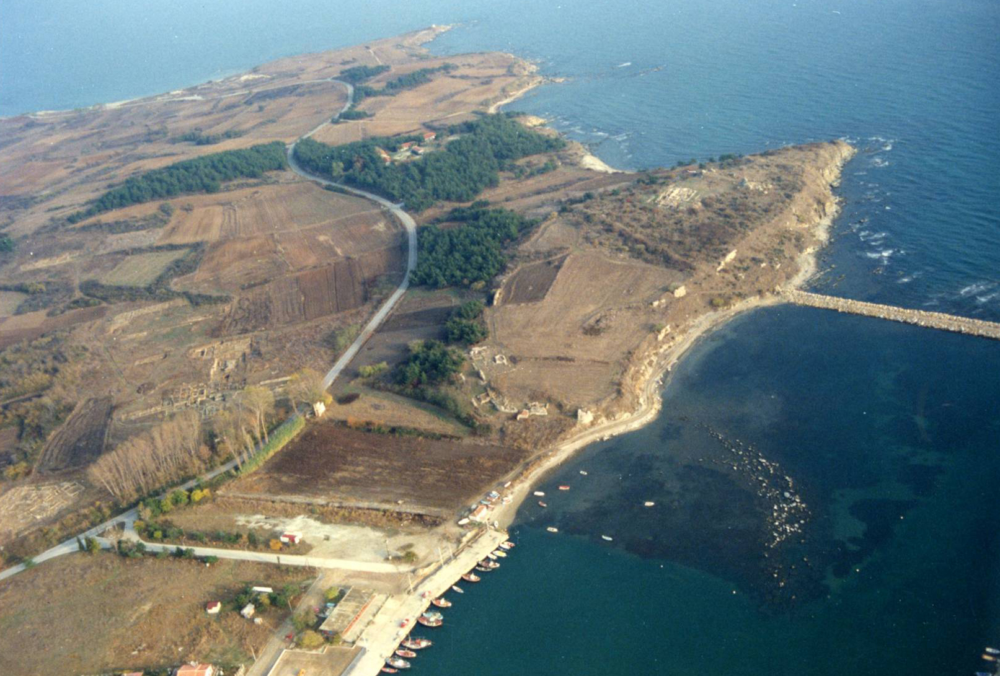
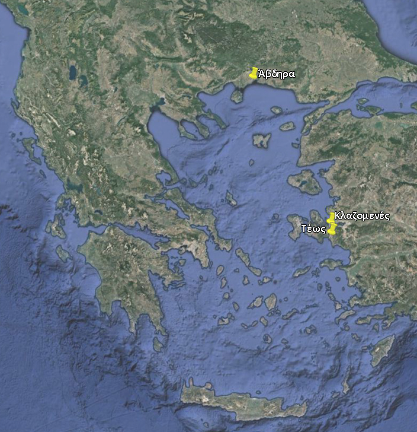
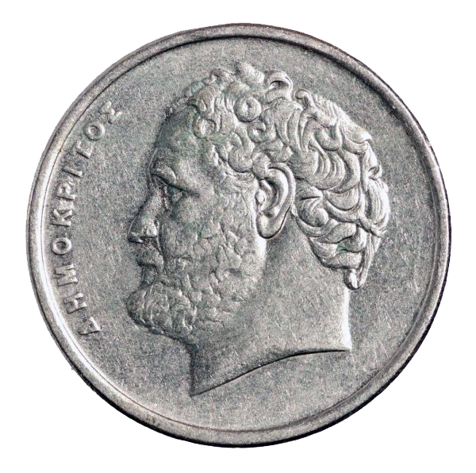
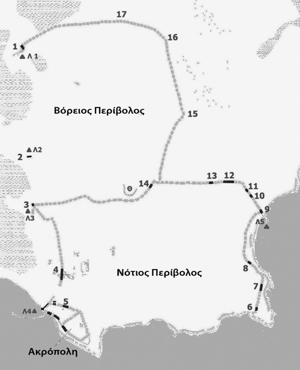

A SHORT HISTORY OF ABDERA

Abdera, one of the most important ancient cities in the North Aegean, lies in a favourable
location boasting two natural harbours on the coast of Thrace. It was founded by a group
of colonists led by Timesios from Clazomenae, a Greek city in the peninsula of Erythrae in Ionia,
in the mid-7th century.

The colony did not thrive at first due not only to conflicts with the Thracians, who already dwelled there,
but also because of the adverse weather conditions at the estuary of the Nestos River, which used to
flow much closer to Abdera (nowadays there is a new riverbed). A striking feature from this time period
is that most graves in the area belonged to infants, which led to the conclusion that the first inhabitants
suffered from malaria, a fact also supported by skeletal remains.

Almost a century later, in 545 BC, the area was colonized for a second time by the inhabitants of Teos,
another Greek city situated very close to Clazomenae. The Teoans settled in the same territory and
coexisted with the Clazomeneans, claiming Heracles as mythical founder and Abdiros, as eponymous hero,
who according to legend had been devoured by the horses of King Diomedes of the Bistones Thracians.
In the beginning, those too faced various problems with the Thracians but they finally prevailed and
soon their city was flourishing, both on an economic and intellectual level. A plethora of distinguished
figures were born and lived in Abdera, such as Anacreon, the famous poet, Protagoras the sophist, and
the great philosopher Democritus, the father of atomic theory.

After the Persian Wars, Abdera joined the first Athenian Alliance, paying a particularly heavy
tax while maintaining close contacts with the independent Odrysian kingdom. In 376 BC, the city
was invaded by the Thracian tribe of the Triballi, while in around 350 BC it was seized by the
Macedonian king Philip II. Those events along with the geomorphological processes brought upon
about by the ongoing alluvial deposits of the Nestos River forced the Abderians to relocate further south.
A new urban complex was built under a comprehensive building programme which was designed according
to Hippodamian principles. It comprised strong fortification walls, an acropolis, two harbours and a theatre,
while dwellings were arranged around streets and squares.
In the years of Roman domination in Greece, Abdera remained a free city-state but heavily reliant on and controlled by Rome.
The decline of the / this once powerful city of Thrace, which in its heyday had a population of around 22,000 inhabitants,
began at this very moment, not only because of political upheaval and instability but also due to the fact that alluvial
deposits caused by the Nestos River blocked its ports, upon which the power of the city had been based over the centuries.
Later, in the first half of the 4th century AD, the settlement, now significantly shrunk, was transferred to the hill
of the ancient acropolis, renamed Polystylon and a part of it was turned into a cemetery. The area was inhabited
up until the 14th century AD.

Agriculture, animal husbandry, fishing, craftsmanship, artisanship but above all, extensive commerce activities
constituted the sources of private and public wealth. The city’s flourishing coinage, which began in around 520 BC
is indicative of its affluence. The city-state of Abdera was very well-organised; the type of government was democratic
with boule and demos (assembly) being its ruling political bodies. The chief archon and the archon eponymous was the
priest of Apollo or Prytaneis, while there were also other executive and financial archons ( Timouchoi, Nomophylakes,
Argyrotamies to name a few). Among the laws that had been passed we can mention the one which prohibited the burial
of those citizens who had squandered their father’s fortune on travel and the one which aimed at the protection
of democracy against conspirators.
The emblem of the city was a griffin and the protecting deity was Apollo. Other known cults were those of Dionysus,
Aphrodite, Athena, Hermes, Artemis, Demeter, Cybele, Heracles and of the eponymous archon, Abdiros.
Ancient written sources mention large religious festivals, like the Dionysia, Thesmophoria (in honour of Demeter)
and sport events in honour of Abdiros. The Dionysia consisted of sporting events, theatrical performances, and ceremonies
to welcome foreign officials and offer gold wreaths to those who had benefited the city.